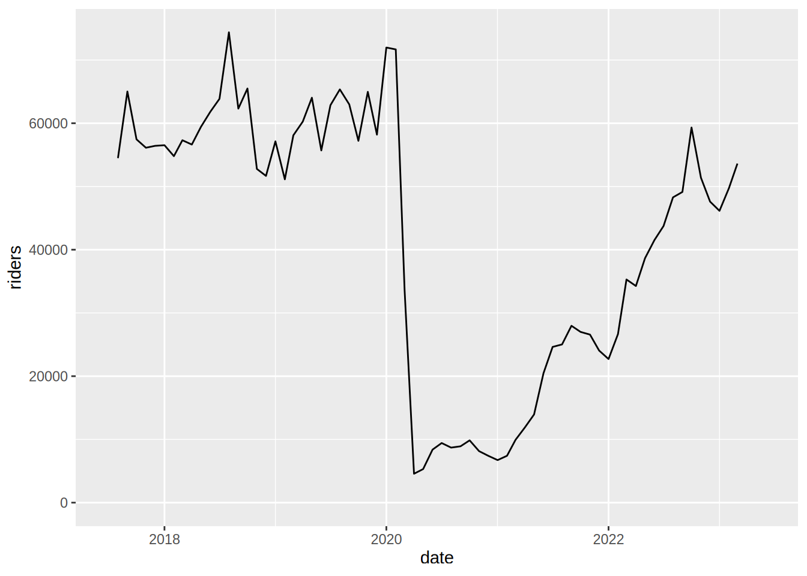

2 Tidy & Relational Data
This chapter is part 2 (of 2) of Cleaning & Reshaping Data, a workshop series about how to prepare data for analysis. The major topics of this chapter are how to reshape datasets with pivots and how to combine related datasets with joins
Learning Objectives
After completing this session, learners should be able to:
- Explain what it means for data to be tidy
- Use the tidyr package to reshape data
- Explain what a relational dataset is
- Use the dplyr package to join data based on common columns
- Describe the different types of joins
- Identify which types of joins to use when faced with a relational dataset
2.1 Tidy Datasets
The structure of a dataset—its shape and organization—has enormous influence on how difficult it will be to analyze, so making structural changes is an important part of the cleaning process. Researchers conventionally arrange tabular datasets so that each row contains a single observation or case, and each column contains a single kind of measurement or identifier, called a feature.
In 2014, Hadley Wickham refined and formalized the conventions for tabular datasets by introducing the concept of tidy datasets, which have a specific structure. Paraphrasing Wickham, the rules for a tidy dataset are:
- Every column is a single feature.
- Every row is a single observation.
- Every cell is a single value.
These rules ensure that all of the values in a dataset are visually organized and are easy to access with indexing operations. They’re also specific enough to make tidiness a convenient standard for functions that operate on tabular datasets. In fact, the Tidyverse packages (see Section 1.1) are designed from the ground up for working with tidy datasets. Tidy datesets have also been adopted as a standard in other software, including various packages for Python and Julia.
This section explains how to reshape tabular datasets into tidy datasets. While reshaping can seem tricky at first, making sure your dataset has the right structure before you begin analysis saves time and frustration in the long run.
2.1.1 The tidyr Package
The tidyr package provides functions to reshape tabular datasets. It also provides examples of tidy and untidy datasets. Like most Tidyverse packages, it comes with detailed documentation and a cheatsheet.
As usual, install the package if you haven’t already, and then load it:
Let’s start with an example of a tidy dataset. The table1 dataset in the
package records the number of tuberculosis cases across several different
countries and years:
## # A tibble: 6 × 4
## country year cases population
## <chr> <dbl> <dbl> <dbl>
## 1 Afghanistan 1999 745 19987071
## 2 Afghanistan 2000 2666 20595360
## 3 Brazil 1999 37737 172006362
## 4 Brazil 2000 80488 174504898
## 5 China 1999 212258 1272915272
## 6 China 2000 213766 1280428583Each of the four columns contains a single kind of measurement or identifier, so the dataset satifies tidy rule 1. The measurements were taken at the country-year level, and each row contains data for one country-year pair, so the dataset also satisfies tidy rule 2. Each cell in the data frame only contains one value, so the dataset also satisfies tidy rule 3.
The same data are recorded in table2, table3, and the pair table4a with
table4b, but these are all untidy datasets. For example, table2 breaks
rule 1 because the column count contains two different kinds of
measurements—case counts and population counts:
## # A tibble: 12 × 4
## country year type count
## <chr> <dbl> <chr> <dbl>
## 1 Afghanistan 1999 cases 745
## 2 Afghanistan 1999 population 19987071
## 3 Afghanistan 2000 cases 2666
## 4 Afghanistan 2000 population 20595360
## 5 Brazil 1999 cases 37737
## 6 Brazil 1999 population 172006362
## 7 Brazil 2000 cases 80488
## 8 Brazil 2000 population 174504898
## 9 China 1999 cases 212258
## 10 China 1999 population 1272915272
## 11 China 2000 cases 213766
## 12 China 2000 population 1280428583When considering whether you should reshape a dataset, think about what the features are and what the observations are. These depend on the dataset itself, but also on what kinds of analyses you want to do. Datasets sometimes have closely related features or multiple (nested) levels of observation. The tidyr documentation includes a detailed article on how to reason about reshaping datasets.
If you do decide to reshape a dataset, then you should also think about what role each feature serves:
Identifiers are labels that distinguish observations from one another. They are often but not always categorical. Examples include names or identification numbers, treatment groups, and dates or times. In the tuberculosis data set, the
countryandyearcolumns are identifiers.Measurements are the values collected for each observation and typically the values of research interest. For the tuberculosis data set, the
casesandpopulationcolumns are measurements.
Having a clear understanding of which features are identifiers and which are measurements makes it easier to use the tidyr functions.
2.1.2 Rows into Columns
Tidy data rule 1 is that each column must be a single feature. The table2
dataset breaks this rule:
## # A tibble: 12 × 4
## country year type count
## <chr> <dbl> <chr> <dbl>
## 1 Afghanistan 1999 cases 745
## 2 Afghanistan 1999 population 19987071
## 3 Afghanistan 2000 cases 2666
## 4 Afghanistan 2000 population 20595360
## 5 Brazil 1999 cases 37737
## 6 Brazil 1999 population 172006362
## 7 Brazil 2000 cases 80488
## 8 Brazil 2000 population 174504898
## 9 China 1999 cases 212258
## 10 China 1999 population 1272915272
## 11 China 2000 cases 213766
## 12 China 2000 population 1280428583To make the dataset tidy, the measurements in the count column need to be
separated into two separate columns, cases and population, based on the
categories in the type column.
You can use the pivot_wider function to pivot the single count column
into two columns according to the type column. This makes the dataset wider,
hence the name pivot_wider.
The function’s first parameter is the dataset to pivot. Other important parameters are:
values_from– The column(s) to pivot.names_from– The column that contains names for the new columns.id_cols– The identifier columns, which are not pivoted. This defaults to all columns except those invalues_fromandnames_from.
Here’s how to use the function to make table2 tidy:
## # A tibble: 6 × 4
## country year cases population
## <chr> <dbl> <dbl> <dbl>
## 1 Afghanistan 1999 745 19987071
## 2 Afghanistan 2000 2666 20595360
## 3 Brazil 1999 37737 172006362
## 4 Brazil 2000 80488 174504898
## 5 China 1999 212258 1272915272
## 6 China 2000 213766 1280428583The function automatically removes values from the country and year columns
as needed to maintain their original correspondence with the pivoted values.
2.1.3 Columns into Rows
Tidy data rule 2 is that every row must be a single observation. The table4a
and table4b datasets break this rule because each row in each dataset
contains measurements for two different years:
## # A tibble: 3 × 3
## country `1999` `2000`
## <chr> <dbl> <dbl>
## 1 Afghanistan 745 2666
## 2 Brazil 37737 80488
## 3 China 212258 213766## # A tibble: 3 × 3
## country `1999` `2000`
## <chr> <dbl> <dbl>
## 1 Afghanistan 19987071 20595360
## 2 Brazil 172006362 174504898
## 3 China 1272915272 1280428583The tuberculosis case counts are in table4a. The population counts are in
table4b. Neither is tidy.
To make the table4a dataset tidy, the 1999 and 2000 columns need to be
pivoted into two new columns: one for the measurements (the counts) and one for
the identifiers (the years). It might help to visualize this as stacking the
two separate columns 1999 and 2000 together, one on top of the other, and
then adding a second column with the appropriate years. The same process makes
table4b tidy.
You can use the pivot_longer function to pivot the two columns 1999 and
2000 into a column of counts and a column of years. This makes the dataset
longer, hence the name pivot_longer.
Again the function’s first parameter is the dataset to pivot. Other important parameters are:
cols– The columns to pivot.values_to– Name(s) for the new measurement column(s)names_to– Name(s) for the new identifier column(s)
Here’s how to use the function to make table4a tidy:
## # A tibble: 6 × 3
## country year cases
## <chr> <chr> <dbl>
## 1 Afghanistan 1999 745
## 2 Afghanistan 2000 2666
## 3 Brazil 1999 37737
## 4 Brazil 2000 80488
## 5 China 1999 212258
## 6 China 2000 213766In this case, the cols parameter is set to all columns except the country
column, because the country column does not need to be pivoted. The function
automatically repeats values in the country column as needed to maintain its
original correspondence with the pivoted values.
Here’s the same for table4b:
## # A tibble: 6 × 3
## country year population
## <chr> <chr> <dbl>
## 1 Afghanistan 1999 19987071
## 2 Afghanistan 2000 20595360
## 3 Brazil 1999 172006362
## 4 Brazil 2000 174504898
## 5 China 1999 1272915272
## 6 China 2000 1280428583Once the two datasets are tidy, you can join them with the merge function to
reproduce table1:
## country year cases population
## 1 Afghanistan 1999 745 19987071
## 2 Afghanistan 2000 2666 20595360
## 3 Brazil 1999 37737 172006362
## 4 Brazil 2000 80488 174504898
## 5 China 1999 212258 1272915272
## 6 China 2000 213766 12804285832.1.4 Separating Values
Tidy data rule 3 says each value must have its own cell. The table3 dataset
breaks this rule because the rate column contains two values per cell:
## # A tibble: 6 × 3
## country year rate
## <chr> <dbl> <chr>
## 1 Afghanistan 1999 745/19987071
## 2 Afghanistan 2000 2666/20595360
## 3 Brazil 1999 37737/172006362
## 4 Brazil 2000 80488/174504898
## 5 China 1999 212258/1272915272
## 6 China 2000 213766/1280428583The two values separated by / in the rate column are the tuberculosis case
count and the population count.
To make this dataset tidy, the rate column needs to be split into two
columns, cases and population. The values in the rate column are strings,
so one way to do this is with the stringr package’s str_split_fixed function,
described in Section 1.4.4:
library(stringr)
# Split the rate column into 2 columns.
cols = str_split_fixed(table3$rate, fixed("/"), 2)
# Remove the rate column and append the 2 new columns.
tidy3 = table3[-3]
tidy3$cases = as.numeric(cols[, 1])
tidy3$population = as.numeric(cols[, 2])
tidy3## # A tibble: 6 × 4
## country year cases population
## <chr> <dbl> <dbl> <dbl>
## 1 Afghanistan 1999 745 19987071
## 2 Afghanistan 2000 2666 20595360
## 3 Brazil 1999 37737 172006362
## 4 Brazil 2000 80488 174504898
## 5 China 1999 212258 1272915272
## 6 China 2000 213766 1280428583Extracting values, converting to appropriate data types, and then combining everything back into a single data frame is an extremely common pattern in data science.
The tidyr package provides the separate function to streamline the steps
taken above. The first parameter is the dataset, the second is the column to
split, the third is the names of the new columns, and the fourth is the
delimiter. The convert parameter controls whether the new columns are
automatically converted to appropriate data types:
## # A tibble: 6 × 4
## country year cases population
## <chr> <dbl> <int> <int>
## 1 Afghanistan 1999 745 19987071
## 2 Afghanistan 2000 2666 20595360
## 3 Brazil 1999 37737 172006362
## 4 Brazil 2000 80488 174504898
## 5 China 1999 212258 1272915272
## 6 China 2000 213766 1280428583As of writing, the tidyr developers have deprecated the separate function in
favor of several more specific functions (separate_wider_delim,
separate_wider_position, and separate_wider_regex). These functions are
still experimental, so we still recommend using the separate function in the
short term.
2.1.5 Case Study: SMART Ridership
Sonoma-Marin Area Rail Transit (SMART) is a single-line passenger rail service between the San Francisco Bay and Santa Rosa. They publish data about monthly ridership in PDF and Excel format. In this case study, you’ll reshape and clean the dataset to prepare it for analysis.
To get started, download the [February 2024 report in Excel
format][smart-jan24]. Pay attention to where you save the file—or move it to
a directory just for files related to this case study—so that you can load it
into R. If you want, you can use R’s download.file function to download the
file rather than your browser.
The readxl package provides functions to read data from Excel files. Install the package if you don’t already have it installed, and then load it:
You can use the read_excel function to read a sheet from an Excel
spreadsheet. Before doing so, it’s a good idea to manually inspect the
spreadsheet in a spreadsheet program. The SMART dataset contains two tables in
the first sheet, one for total monthly ridership and another for average
weekday ridership (by month).
Let’s focus on the total monthly ridership table, which occupies cells B4 to
H16. You can specify a range of cells when you call read_excel by setting the
range parameter:
smart_path = "./data/SMART Ridership Web Posting_1.24.xlsx"
smart = read_excel(smart_path, range = "B4:I16")
smart## # A tibble: 12 × 8
## Month FY18 FY19 FY20 FY21 FY22 FY23 FY24
## <chr> <chr> <dbl> <dbl> <dbl> <dbl> <dbl> <dbl>
## 1 Jul - 63864 62851 9427 24627 43752 65779
## 2 Aug 54484 74384 65352 8703 25020 48278 72171
## 3 Sep 65019 62314 62974 8910 27967 49134 68506
## 4 Oct 57453 65492 57222 9851 26998. 59322 70807
## 5 Nov 56125 52774 64966 8145 26575 51383 65445
## 6 Dec 56425 51670 58199. 7414 24050 47606 66684
## 7 Jan 56527 57136 71974 6728 22710 46149 65990
## 8 Feb 54797 51130 71676 7412 26652 49724 NA
## 9 Mar 57312 58091 33624 9933 35291 53622 NA
## 10 Apr 56631 60256 4571 11908 34258 58551 NA
## 11 May 59428 64036 5308 13949 38655 65416 NA
## 12 Jun 61828 55700 8386 20469 41525 67162 NAThe loaded dataset needs to be cleaned. The FY18 column uses a hyphen to
indicate missing data and has the wrong data type. The identifiers—months and
years—are split between the row and column names and each row contains data from seven different years, so the dataset is also not tidy. In addition, the years are indicated in fiscal years (FY), which begin in July rather than January, so some of the years need to be adjusted.
You can correct the missing value in the FY18 column with indexing, and the
type with the as.numeric function:
## # A tibble: 6 × 8
## Month FY18 FY19 FY20 FY21 FY22 FY23 FY24
## <chr> <dbl> <dbl> <dbl> <dbl> <dbl> <dbl> <dbl>
## 1 Jul NA 63864 62851 9427 24627 43752 65779
## 2 Aug 54484 74384 65352 8703 25020 48278 72171
## 3 Sep 65019 62314 62974 8910 27967 49134 68506
## 4 Oct 57453 65492 57222 9851 26998. 59322 70807
## 5 Nov 56125 52774 64966 8145 26575 51383 65445
## 6 Dec 56425 51670 58199. 7414 24050 47606 66684To make the dataset tidy, it needs to be reshaped so that the values in the various fiscal year columns are all in one column. In other words, the dataset needs to be pivoted longer (Section 2.1.3). The result of the pivot will be easier to understand if you rename the columns as their years first. Here’s one way to do that:
## # A tibble: 6 × 8
## Month `2018` `2019` `2020` `2021` `2022` `2023` `2024`
## <chr> <dbl> <dbl> <dbl> <dbl> <dbl> <dbl> <dbl>
## 1 Jul NA 63864 62851 9427 24627 43752 65779
## 2 Aug 54484 74384 65352 8703 25020 48278 72171
## 3 Sep 65019 62314 62974 8910 27967 49134 68506
## 4 Oct 57453 65492 57222 9851 26998. 59322 70807
## 5 Nov 56125 52774 64966 8145 26575 51383 65445
## 6 Dec 56425 51670 58199. 7414 24050 47606 66684Next, use pivot_longer to pivot the dataset:
smart_long = pivot_longer(smart, cols = -Month, values_to = "riders",
names_to = "fiscal_year")
head(smart_long)## # A tibble: 6 × 3
## Month fiscal_year riders
## <chr> <chr> <dbl>
## 1 Jul 2018 NA
## 2 Jul 2019 63864
## 3 Jul 2020 62851
## 4 Jul 2021 9427
## 5 Jul 2022 24627
## 6 Jul 2023 43752Now the dataset is tidy, but it’s still not completely clean. Our next step is to convert the fiscal years to calendar years. Pivoting the column names into fiscal_year has resulted in the years being strings that look like numbers, so we also need to convert fiscal_year to numeric.
Our work toward tidying the data is proceeding in several small steps that each improve the data in some small way. This next block of code introduces two tricks that make such a chain of operations easier to write and to read: the with function and R’s pipe operator |>.
The with function allows you to be less redundant when you need to refer to the same data.frame several times. The first argument is your data.frame, and the second is a block of R code. Any variable names you use in the code block will be sought in the columns of the data.frame.
The other trick is the pipe operator. It connects two functions, with the output of the one written first becoming the input of the one written second. The built in pipe |> was introduced due to the popularity of the older %>% pipe provided by the magrittr package.
The SMART fiscal year extends from July to the following June and equals the
calendar year at the end of the period. So for observations from July to
December, the calendar year is the fiscal year minus 1. There are many ways to calculate a new column from the existing columns — we will use the ifelse function to set a column’s values conditional on some other columns.
Our calculation is to subtract one from the fiscal year if the month is seven or less so we have to convert the months to numbers from text abbreviations. Let’s use our old friend the fast_strptime function from the lubridate package (Section 1.2.1).
##
## Attaching package: 'lubridate'## The following objects are masked from 'package:base':
##
## date, intersect, setdiff, union#convert the fiscal_year column to numeric
smart_long$fiscal_year = as.numeric(smart_long$fiscal_year)
# create a month_number column from the abbreviated month names
smart_long$month_number =
fast_strptime(smart_long$Month, "%m") |>
month()
# convert fiscal_year to calendar year
smart_long$cal_year =
with(smart_long,
ifelse(month_number >= 7, fiscal_year - 1, fiscal_year)
)
head(smart_long)## # A tibble: 6 × 5
## Month fiscal_year riders month_number cal_year
## <chr> <dbl> <dbl> <dbl> <dbl>
## 1 Jul 2018 NA 7 2017
## 2 Jul 2019 63864 7 2018
## 3 Jul 2020 62851 7 2019
## 4 Jul 2021 9427 7 2020
## 5 Jul 2022 24627 7 2021
## 6 Jul 2023 43752 7 2022We want to make a plot of ridership over time. To do so, time needs to be a single column that can be mapped to the horizontal axis of our plot, but right now time is split between cal_year and month_number. Let’s combine and convert the month and cal_year
columns into a calendar date with the make_date function from lubridate. Then we’ll arrange the rows by date, which is more sensible than the current arrangement where all the rows for Julys are followed by all the rows for Augusts, and so on.
smart_long$date =
with(smart_long, make_date(year=cal_year, month=month_number))
smart_long = smart_long[order(smart_long$date),]
head(smart_long, n=14)## # A tibble: 14 × 6
## Month fiscal_year riders month_number cal_year date
## <chr> <dbl> <dbl> <dbl> <dbl> <date>
## 1 Jul 2018 NA 7 2017 2017-07-01
## 2 Aug 2018 54484 8 2017 2017-08-01
## 3 Sep 2018 65019 9 2017 2017-09-01
## 4 Oct 2018 57453 10 2017 2017-10-01
## 5 Nov 2018 56125 11 2017 2017-11-01
## 6 Dec 2018 56425 12 2017 2017-12-01
## 7 Jan 2018 56527 1 2018 2018-01-01
## 8 Feb 2018 54797 2 2018 2018-02-01
## 9 Mar 2018 57312 3 2018 2018-03-01
## 10 Apr 2018 56631 4 2018 2018-04-01
## 11 May 2018 59428 5 2018 2018-05-01
## 12 Jun 2018 61828 6 2018 2018-06-01
## 13 Jul 2019 63864 7 2018 2018-07-01
## 14 Aug 2019 74384 8 2018 2018-08-01As a final adjustment, you can use the tolower function to convert the column
names to lowercase, so that they’re easier to use during analysis:
## # A tibble: 6 × 6
## month fiscal_year riders month_number cal_year date
## <chr> <dbl> <dbl> <dbl> <dbl> <date>
## 1 Jul 2018 NA 7 2017 2017-07-01
## 2 Aug 2018 54484 8 2017 2017-08-01
## 3 Sep 2018 65019 9 2017 2017-09-01
## 4 Oct 2018 57453 10 2017 2017-10-01
## 5 Nov 2018 56125 11 2017 2017-11-01
## 6 Dec 2018 56425 12 2017 2017-12-01Now that the dataset is tidied and cleaned, it’s straightforward to do things like plot it as a time series:
library("ggplot2")
ggplot(smart_long) + aes(x = date, y = riders) + geom_line() +
expand_limits(y = 0)## Warning: Removed 6 rows containing missing values (`geom_line()`).
Notice the huge drop (more than 90%) in April of 2020 due to the COVID-19 pandemic!
2.1.6 Without tidyr
This section shows how to pivot datasets without the help of the tidyr package. In practice, we recommend that you use the package, but the examples here may make it easier to understand what’s actually happening when you pivot a dataset.
2.1.6.1 Rows into Columns
The steps for pivoting table2 wider are:
- Subset rows to separate
casesandpopulationvalues. - Remove the
typecolumn from each. - Rename the
countcolumn tocasesandpopulation. - Merge the two subsets by matching
countryandyear.
And the code is:
# Step 1
cases = table2[table2$type == "cases", ]
pop = table2[table2$type == "population", ]
# Step 2
cases = cases[-3]
pop = pop[-3]
# Step 3
names(cases)[3] = "cases"
names(pop)[3] = "population"
# Step 4
merge(cases, pop)## country year cases population
## 1 Afghanistan 1999 745 19987071
## 2 Afghanistan 2000 2666 20595360
## 3 Brazil 1999 37737 172006362
## 4 Brazil 2000 80488 174504898
## 5 China 1999 212258 1272915272
## 6 China 2000 213766 12804285832.1.6.2 Columns into Rows
The steps for pivoting table4a longer are:
- Subset columns to separate
1999and2000into two data frames. - Add a
yearcolumn to each. - Rename the
1999and2000columns tocases. - Stack the two data frames with
rbind.
And the code is:
# Step 1
df99 = table4a[-3]
df00 = table4a[-2]
# Step 2
df99$year = "1999"
df00$year = "2000"
# Step 3
names(df99)[2] = "cases"
names(df00)[2] = "cases"
# Step 4
rbind(df99, df00)## # A tibble: 6 × 3
## country cases year
## <chr> <dbl> <chr>
## 1 Afghanistan 745 1999
## 2 Brazil 37737 1999
## 3 China 212258 1999
## 4 Afghanistan 2666 2000
## 5 Brazil 80488 2000
## 6 China 213766 20002.2 Relational Datasets
Many datasets contain multiple tables (or data frames) that are all closely related to each other. Sometimes, the rows in one table may be connected the rows in others through columns they have in common.
For example, our library keeps track of its books using three tables: one identifying books, one identifying borrowers, and one that records each book checkout. Each book and each borrower has a unique identification number, recorded in the book and borrower tables, respectively. These ID numbers are also recorded in the checkouts table. Using the ID numbers, you can connect rows from one table to rows in another. We call this kind of dataset a relational dataset, because there are relationships between the tables.
Storing relational datasets as several small tables rather than one large table has many benefits. Perhaps the most important is that it reduces redundancy and thereby reduces the size (in bytes) of the dataset. As a result, most databases are designed to store relational datasets.
Because the data are split across many different tables, relational datasets also pose a unique challenge: to explore, compute statistics, make visualizations, and answer questions, you’ll typically need to combine the data of interest into a single table. One way to do this is with a join, an operation that combines rows from two tables based on values of a column they have in common. There are many different types of joins, which are covered in the subsequent sections.
2.2.1 The dplyr Package
The dplyr package provides functions to join related data frames, among other things. Check out this list of all the functions provided by dplyr.
If you’ve ever used SQL, you’re probably familiar with relational datasets and
recognize functions like select, left_join, and group_by. In fact,
dplyr was designed to bring SQL-style data manipulation to R. As a result,
many concepts of dplyr and SQL are nearly identical, and even the language
overlaps a lot. I’ll point out some examples of this as we go, because I think
some people might find it helpful. If you haven’t used SQL, don’t worry—all
of the functions will be explained in detail.
2.2.2 Gradebook Dataset
Another example of a relational dataset that we all interact with regularly is the university gradebook. One table might store information about students and another might store their grades. The grades are linked to the student records by student ID. Looking at a student’s grades requires combining the two tables with a join.
Let’s use a made-up gradebook dataset to make the idea of joins concrete. We’ll create two tables: the first identifies students by name and ID, and the second lists their grades in a class.
# Example datasets
students = data.frame(
student_id = c(1, 2, 3, 4),
name = c("Angel", "Beto", "Cici", "Desmond"))
students## student_id name
## 1 1 Angel
## 2 2 Beto
## 3 3 Cici
## 4 4 Desmond## student_id grade
## 1 2 90
## 2 3 85
## 3 4 80
## 4 5 75
## 5 6 60The rows and columns of these tables have different meanings, so we can’t stack
them side-by-side or one on top of the other. The “key” piece of information
for linking them is the student_id column present in both.
In relational datasets, each table usually has a primary key, a column of values that uniquely identify the rows. Key columns are important because they link rows in one table to rows in other tables.
In the gradebook dataset, student_id is the primary key for the students
table. Although the values of student_id in the grades table are unique, it
is not a primary key for the grades table, because a student could have
grades for more than one class.
When one table’s primary key is included in another table, it’s called a
foreign key. So student_id is a foreign key in the grades table.
If you’ve used SQL, you’ve probably heard the terms primary key and foreign key before. They have the same meaning in R.
In most databases, the primary key must be unique—there can be no duplicates. That said, the datasets you’ll use in R are not always coming from a database, so they may have key columns that are not unique. We’ll talk later about how to handle non-unique keys.
2.2.3 Left Joins
Suppose we want a table with each student’s name and grade. This is a
combination of information from both the students table and the grades
table, but how can we combine the two?
The students table contains the student names and has one row for each
student. So we can use the students table as a starting point. Then we need
to use each student’s ID number to look up their grade in the grades table.
When you want combine data from two tables like this, you should think of using a join. In joins terminology, the two tables are usually called the left table and right table so that it’s easy to refer to each without ambiguity.
For this particular example, we’ll use a left join. A left join keeps all of the rows in the left table and combines them with rows from the right table that match the primary key.
We want to keep every student in the students table, so we’ll use it as the
left table. The grades table will be the right table. The key that links the
two tables is student_id. This left join will only keep rows from the
grades table that match student IDs present in the students table.
In dplyr, you can use the left_join function to carry out a left join. The
first argument is the left table and the second argument is the right table.
You can also set an argument for the by parameter to specify which column(s)
to use as the key. Thus:
## student_id name grade
## 1 1 Angel NA
## 2 2 Beto 90
## 3 3 Cici 85
## 4 4 Desmond 80Note that the keys do not match up perfectly between the tables: the grades
table has no rows with student_id 1 (Angel) and has rows with student_id 5
(an unknown student). Because we used a left join, the result has a missing
value (NA) in the grade column for Angel and no entry for student_id 5. A
left join augments the left table (students) with columns from the right
table (grades). So the result of a left join will often have the same number
of rows as the left table. New rows are not added for rows in the right table
with non-matching key values.
There is one case where the result of a left join will have more rows than the
left table: when a key value is repeated in either table. In that case, every
possible match will be provided in the result. For an example, let’s add rows
with repeat IDs to both the students and grades tables. Let’s also rename
the student_id column of grades to be sid so we can see how to join
tables where the key column names don’t match.
# Example datasets
students = data.frame(
student_id = c(1, 2, 3, 4, 4),
name = c("Angel", "Beto", "Cici", "Desmond", "Erik"))
grades = data.frame(
sid = c(2, 3, 4, 5, 2),
grade = c(90, 85, 80, 75, 60))
# Left join
left_join(students, grades, by = join_by(student_id == sid))## Warning in left_join(students, grades, by = join_by(student_id == sid)): Detected an unexpected many-to-many relationship between `x` and `y`.
## ℹ Row 2 of `x` matches multiple rows in `y`.
## ℹ Row 3 of `y` matches multiple rows in `x`.
## ℹ If a many-to-many relationship is expected, set `relationship = "many-to-many"` to silence this warning.## student_id name grade
## 1 1 Angel NA
## 2 2 Beto 90
## 3 2 Beto 60
## 4 3 Cici 85
## 5 4 Desmond 80
## 6 4 Erik 80Both of the tables had five rows, but the result has six rows because
student_id is 4 for two rows of students and sid is 2 for two rows of
grades. R warns that there is a many-to-many relationship in the
join, which means that duplicate keys were matched in the left table and the
right table. When there are no duplicate keys in either table, the match is
one-to-one. When there are duplicates in one table only, the match is
one-to-many or many-to-one. These are often desired behavior and so R just
complies silently. A many-to-many match may be desired, but it is often a sign
that something has gone wrong, so R emits a warning. You can get funky results
when your keys are not unique!
2.2.4 Other Joins
There are several other kinds of joins:
- A right join is almost the same as a left join, but reverses the roles of the left and right table. All rows from the right table are augmented with columns from the left table where the key matches.
- An inner join returns rows from the left and right tables only if they match (their key appears in both tables).
- A full join returns all rows from the left table and from the right table, even if they do not match.
2.2.4.1 Inner Join
An inner join returns the same columns as a left join, but potentially fewer rows. The result of a inner join only includes the rows that matched according to the join specification. This will leave out some rows from the left table if they aren’t matched in the right table, which is the difference between an inner join and a left join.
# Example datasets
students = data.frame(
student_id = c(1, 2, 3, 4, 4),
name = c("Angel", "Beto", "Cici", "Desmond", "Erik"))
grades = data.frame(
student_id = c(2, 3, 4, 5, 2),
grade = c(90, 85, 80, 75, 60))
# Inner join
inner_join(students, grades, by = "student_id")## Warning in inner_join(students, grades, by = "student_id"): Detected an unexpected many-to-many relationship between `x` and `y`.
## ℹ Row 2 of `x` matches multiple rows in `y`.
## ℹ Row 3 of `y` matches multiple rows in `x`.
## ℹ If a many-to-many relationship is expected, set `relationship = "many-to-many"` to silence this warning.## student_id name grade
## 1 2 Beto 90
## 2 2 Beto 60
## 3 3 Cici 85
## 4 4 Desmond 80
## 5 4 Erik 80Notice that the result has one row for every time the keys match, but does not include rows from either table where the keys don’t match. This is different from the left join, which retained the row for Angel from the left (students) table in the result even though it had no match in the right (grades) table.
2.2.5 Getting Clever with join_by
So far, we’ve focused on the join types and the tables. There’s been a third element in all of the examples that we’ve mostly ignored until now: the by argument in the joins. Specifying a single column name (like student_id) works great when the key columns have the same names in both tables. However, real examples are often more complicated. For those times, dplyr provides a function called join_by, which lets you create join specifications to solve even very complicated problems. We begin with an example where the key name in the grades table has been changed from student_id to sid.
# Example datasets
students = data.frame(
student_id = c(1, 2, 3, 4),
name = c("Angel", "Beto", "Cici", "Desmond"))
grades = data.frame(
sid = c(2, 3, 4, 5),
grade = c(90, 85, 80, 75))
# Left join
left_join(students, grades, by = join_by(student_id==sid)) ## student_id name grade
## 1 1 Angel NA
## 2 2 Beto 90
## 3 3 Cici 85
## 4 4 Desmond 80Since the key column names don’t match, I have provided a join_by
specification. Specifying a match via join_by is very powerful and flexible,
but the main thing to recognize here is that R searches for the column name on
the left of the double-equals in the left table and searches for the column
name on the right of the double-equals in the right table. In this example,
that means the join will try to match students$student_id to grades$sid.
2.2.5.1 Matching multiple columns
Sometimes it takes more than one key to uniquely identify a row of data. For example, suppose some of our students are retaking the class in 2023 after already taking it in 2022. Then we would need to combine the student ID with the year to uniquely identify a student’s grade. You can include multiple comparisons in a join_by specification by separating them with commas. In the following example, student ID still has different names between the tables but the year column has the same name in both tables.
In order to construct the new grades data frame, we make use of a new function from the dplyr package. The mutate function allows you to calculate columns from the existing columns of a data frame without having to write grades$ in front of each column. It is better for us here than the with function we saw earlier because we can use mutate to generate multiple columns at the same time. We also introduce rbind, which creates a new data frame by combining the rows of two (or more) data frames.
# Example datasets
students = data.frame(
student_id = c(1, 2, 3, 4),
name = c("Angel", "Beto", "Cici", "Desmond"))
# duplicate the students for two years
students = bind_rows(
mutate(students, year = 2022),
mutate(students, year = 2023)
)
# create the grades data.frame
grades = data.frame(
sid = c(2, 3, 4, 5),
grade = c(90, 85, 80, 75)
)
# duplicate the grades table for two years
grades = rbind(
mutate(grades, year = 2022, grade = grade - 50),
mutate(grades, year = 2023)
)
# Left join
left_join(students, grades, by = join_by(student_id==sid, year))## student_id name year grade
## 1 1 Angel 2022 NA
## 2 2 Beto 2022 40
## 3 3 Cici 2022 35
## 4 4 Desmond 2022 30
## 5 1 Angel 2023 NA
## 6 2 Beto 2023 90
## 7 3 Cici 2023 85
## 8 4 Desmond 2023 80To learn clever tricks for complicated joins, see the documentation at ?join_by.
2.2.6 Examples
We’ve seen enough of the made-up grades example! Let’s look at some real data and practice our skills!
Let’s begin by looking at the data on books, borrowers, and checkouts. Download the three tables (in CSV format) via these links. Make sure you keep track of their location so tat you can import them from the location where you downloaded them.
library(readr)
borrowers = read_csv("data/library/borrowers.csv")
books = read_csv("data/library/books.csv")
checkouts = read_csv("data/library/checkouts.csv")
# show the top rows
head(books)## # A tibble: 6 × 14
## book_id title author publisher creation_date pub_date item_type
## <dbl> <chr> <chr> <chr> <dttm> <chr> <chr>
## 1 1 The textual t… Boter… Brill 2016-08-03 01:02:20 1988 Book - P…
## 2 2 Intellectual … <NA> Universi… 2016-08-03 01:02:26 ©2003. Book - P…
## 3 3 The last redw… Leyde… Sierra C… 2016-08-03 01:02:29 [1969] Book - P…
## 4 4 Large lakes :… <NA> Springer… 2016-08-03 01:02:30 ©1990. Book - P…
## 5 5 Ruling suburb… McLar… Associat… 2016-08-03 01:02:37 ©2003. Book - P…
## 6 6 Laser diode m… Peter… Sold and… 2016-08-03 01:02:42 ©1988. Book - P…
## # ℹ 7 more variables: location_code <chr>, material_type <chr>, barcode <dbl>,
## # publication_place <chr>, language <chr>, descripton <chr>, loans <dbl>## # A tibble: 6 × 3
## borrower_id user_group creation_date
## <dbl> <chr> <dttm>
## 1 1 Faculty and Staff 2020-04-10 00:00:00
## 2 2 Faculty and Staff 2020-05-17 00:00:00
## 3 3 Faculty and Staff 2020-05-30 00:00:00
## 4 4 Law Faculty 2020-06-05 00:00:00
## 5 5 Faculty and Staff 2020-06-19 00:00:00
## 6 6 Faculty and Staff 2020-07-08 00:00:00## # A tibble: 6 × 5
## book_id borrower_id barcode loan_date due_date
## <dbl> <dbl> <dbl> <dttm> <dttm>
## 1 1705 129 3.12e13 2019-05-15 00:00:00 2024-06-30 00:00:00
## 2 4542 353 8.70e 6 2019-01-17 00:00:00 2022-06-30 00:00:00
## 3 2958 585 3.12e13 2022-04-06 00:00:00 2024-06-30 00:00:00
## 4 575 465 3.12e13 2020-02-16 00:00:00 2024-06-30 00:00:00
## 5 1493 425 3.12e13 2022-11-07 00:00:00 2024-06-30 00:00:00
## 6 539 522 3.12e13 2019-02-20 00:00:00 2024-06-30 00:00:00## [1] 5665 14## [1] 722 3## [1] 1000 5Suppose we want to know which books were checked out most often, or were generally checked out by the same people. The books table has a key column called book_id and the borrowers table has a primary key called borrower_id. The checkouts has two ID columns: book_id and borrower_id. These match the borrower and book IDs in the borrowers and books tables. Obviously, these aren’t unique: one person may check out multiple books, and a book can be checked out on more than one occasion.
Now we can begin to reason about how to approach the goal of identifying the books that are most often checked out. We want to augment the checkouts table with the information in the books table, matching rows where book_id matches. Every row in the checkouts table should match exactly one row in the results and every row in the results should match exactly one row in the checkouts table.
Since we want to preserve the rows of checkouts, we will do a left join, with checkouts as the left table. What to use as the right table depends on what information we want to join to the checkouts. Let’s begin by joining checkouts to books and identifying which books were checked out most often.
We are once again going to chain multiple data-processing steps together with the pipe (|>). We also introduce a few new functions from dplyr: group_by forms row groups based on the values of some column(s); summarize calculates a single-row summary that replaces all the rows in a group; n counts the rows in a group; and finally arrange puts the rows in order according to the values in some column(s).
# Top ten books with most checkouts
left_join(checkouts, books, by="book_id") |>
group_by(book_id) |>
summarize(title=first(title), author=first(author), n_checkouts=n()) |>
arrange(desc(n_checkouts)) |>
head(n=10) ## # A tibble: 10 × 4
## book_id title author n_checkouts
## <dbl> <chr> <chr> <int>
## 1 1 "The textual tradition of Plato's Republic /" Boter… 1
## 2 13 "Sechs italienische Sonaten : für Querflöte und B… Quant… 1
## 3 16 "Plato's moral realism : the discovery of the pre… Rist,… 1
## 4 23 "Second World War /" Gilbe… 1
## 5 28 "Die Fliegen der palaearktischen Region." Lindn… 1
## 6 36 "Early English Text Society." <NA> 1
## 7 48 "City, chant, and the topography of early music /" <NA> 1
## 8 59 "Fiscal federalism" Oates… 1
## 9 67 "Armenia: cradle of civilization." Lang,… 1
## 10 72 "Aristotle on science, the \"Posterior analytics\… Sympo… 1Just for fun, here is an instructive example of why relational tables are a better way to store data than putting everything into one spreadsheet. If we want to identify the authors whose books were most checked out from the UCD library, we might think to adapt our previous example to group by author rather than by book_id.
# Top ten authors with most checkouts
inner_join(checkouts, books, by="book_id") |>
group_by(author) |>
summarize(author=first(author), n_checkouts = n()) |>
arrange(desc(n_checkouts)) |>
head(n=10)## # A tibble: 10 × 2
## author n_checkouts
## <chr> <int>
## 1 <NA> 224
## 2 California. 6
## 3 Averroës, 1126-1198. 3
## 4 Origen. 3
## 5 United States Strategic Bombing Survey. 3
## 6 Agresti, Alan. 2
## 7 Areeda, Phillip, author. 2
## 8 Balibar, Étienne, 1942- 2
## 9 Burns, Catherine E. 2
## 10 Giles, Herbert Allen, 1845-1935. 2The problem is that the author column is a text field for author name(s), which is not a one-to-one match to a person. There are a lot of reasons: some books have multiple authors, some authors change their names, the order of personal name and family name may be reversed, and middle initials are sometimes included, sometimes not. A table of authors would allow you to refer to authors by a unique identifier and have it always point to the same name (this is what ORCID does for scientific publishing).
2.2.6.1 Three or More Tables
A join operates on two tables, but you can combine multiple tables by doing
several joins in a row. Let’s look at an example that combines checkouts,
books, and borrowers in order to see how many books were checked out by
students, faculty, and staff.
# list the borrowers who checked out the most books
left_join(checkouts, books, by="book_id") |>
left_join(borrowers, by="borrower_id") |>
group_by(borrower_id) |>
summarize(account_type=first(user_group), n_checkouts = n()) |>
arrange(desc(n_checkouts))## # A tibble: 319 × 3
## borrower_id account_type n_checkouts
## <dbl> <chr> <int>
## 1 217 Faculty and Staff 30
## 2 449 Faculty and Staff 29
## 3 524 Faculty and Staff 22
## 4 569 Faculty and Staff 21
## 5 19 Faculty and Staff 19
## 6 381 Faculty and Staff 17
## 7 20 Faculty and Staff 16
## 8 500 Faculty and Staff 15
## 9 666 Faculty and Staff 15
## 10 129 Faculty and Staff 14
## # ℹ 309 more rowsThis works because the result of the first join is still a table where each row is one checkout. Keeping this as the left table, we then join the table borrowers so the result is a table where each row is one checkout, with information about both the book and the borrower. Then we can summarize the data by how many books were checked out by each type of library user.
2.2.7 Be Explicit
Do you find it odd that we have to tell R exactly what kind of data join to do by calling one of left_join, right_join, inner_join, or full_join? Why isn’t there just one function called join that assumes you’re doing a left join unless you specifically tell it otherwise like join(..., type="inner")? If you think it would be confusing for R to make assumptions about what kind of data join we want, then you’re on the right track! Watch out for these other cases where R does make strong assumptions about what the default behavior should be.
A general principle of programming is that explicit is better than implicit because writing information into your code explicitly makes it easier to understand what the code does. Here are some examples of implicit assumptions R will make unless you provide explicit instructions.
2.2.7.1 Handling Duplicate Keys
Values in the key columns may not be unique. What do you think happens when you join using keys that aren’t unique?
# Example datasets
students = data.frame(
student_id = c(1, 2, 3, 4, 4),
name = c("Angel", "Beto", "Cici", "Desmond", "Erik"))
grades = data.frame(student_id = c(2, 2, 3, 4, 4, 5),
grade = c(90, 50, 85, 80, 75, 30))
# Left join
left_join(students, grades, by = "student_id") ## Warning in left_join(students, grades, by = "student_id"): Detected an unexpected many-to-many relationship between `x` and `y`.
## ℹ Row 2 of `x` matches multiple rows in `y`.
## ℹ Row 4 of `y` matches multiple rows in `x`.
## ℹ If a many-to-many relationship is expected, set `relationship = "many-to-many"` to silence this warning.## student_id name grade
## 1 1 Angel NA
## 2 2 Beto 90
## 3 2 Beto 50
## 4 3 Cici 85
## 5 4 Desmond 80
## 6 4 Desmond 75
## 7 4 Erik 80
## 8 4 Erik 75We get one row in the result for every possible combination of the matching keys! Sometimes that is what you want, and other times not. In this case, it might be reasonable that Beto, Desmond, and Erik have multiple grades in the book, but it is probably not reasonable that both Desmond and Erik have student ID 4 and have the same grades as each other. This is a many-to-many match, with all the risks we’ve mentioned before.
2.2.7.1.1 Specifying the Expected Relationship
You can be explicit about what kind of relationship you expect in the join by specifying the relationship parameter. Your options are one-to-one, one-to-many, or many-to-one. Any of those will stop the code with an error if the data doesn’t match the relationship you told it to expect.
If you leave the relationship parameter blank, R will allow a many-to-many join but will raise a warning. Pay attention to your warning messages! If you know in advance that you want a many-to-many join, then you can provide the argument relatonship='many-to-many', which will do the same as leaving relationship blank, except it will not raise the warning.
2.2.7.1.2 Using Only Distinct Rows
An alternative to handling duplicate keys is to subset the data to avoid duplicates in the first place. The dplyr package provides a function, distinct, which can help. When distinct finds duplicated rows, it keeps the first one.
# Example datasets
students = data.frame(
student_id = c(1, 2, 3, 4, 4),
name = c("Angel", "Beto", "Cici", "Desmond", "Erik"))
grades = data.frame(student_id = c(2, 2, 3, 4, 4, 5),
grade = c(90, 50, 85, 80, 75, 30))
# Left join
distinct_keys_result = students |> distinct(student_id, .keep_all=TRUE) |>
left_join(grades, by = "student_id") 2.2.7.2 Ambiguous Columns
When the two tables have columns with the same names, it is ambiguous which one to use in the result. R handles that situation by keeping both but changing the names to include the table names. So the column from the left table gets a .x appended by default and the column from the right table gets a .y appended by default. Let’s see an example. Suppose that the date_created column of the borrowers table had the name date instead. Then in the joined data it would be ambiguous with the date column of the checkouts table.
# Rename the date_created column of borrowers
borrowers$date = borrowers$creation_date
checkouts$date = checkouts$loan_date
# Now create the list of checkouts
left_join(checkouts, books, by="book_id") |>
left_join(borrowers, by="borrower_id") |>
head(n=10) ## # A tibble: 10 × 22
## book_id borrower_id barcode.x loan_date due_date
## <dbl> <dbl> <dbl> <dttm> <dttm>
## 1 1705 129 3.12e13 2019-05-15 00:00:00 2024-06-30 00:00:00
## 2 4542 353 8.70e 6 2019-01-17 00:00:00 2022-06-30 00:00:00
## 3 2958 585 3.12e13 2022-04-06 00:00:00 2024-06-30 00:00:00
## 4 575 465 3.12e13 2020-02-16 00:00:00 2024-06-30 00:00:00
## 5 1493 425 3.12e13 2022-11-07 00:00:00 2024-06-30 00:00:00
## 6 539 522 3.12e13 2019-02-20 00:00:00 2024-06-30 00:00:00
## 7 4374 224 3.12e13 2019-05-03 00:00:00 2024-06-30 00:00:00
## 8 4234 457 3.12e13 2018-09-18 00:00:00 2024-06-30 00:00:00
## 9 3745 488 3.12e13 2021-06-08 00:00:00 2024-06-30 00:00:00
## 10 5226 4 3.11e13 2020-10-02 00:00:00 2023-06-30 00:00:00
## # ℹ 17 more variables: date.x <dttm>, title <chr>, author <chr>,
## # publisher <chr>, creation_date.x <dttm>, pub_date <chr>, item_type <chr>,
## # location_code <chr>, material_type <chr>, barcode.y <dbl>,
## # publication_place <chr>, language <chr>, descripton <chr>, loans <dbl>,
## # user_group <chr>, creation_date.y <dttm>, date.y <dttm>If you aren’t satisfied with appending .x and .y to the ambiguous columns, then you can specify the suffix argument with a pair of strings like this:
# Now create the list of checkouts
left_join(checkouts, books, by="book_id", suffix=c("_checkout", "_book")) |>
head(n=10) ## # A tibble: 10 × 19
## book_id borrower_id barcode_checkout loan_date due_date
## <dbl> <dbl> <dbl> <dttm> <dttm>
## 1 1705 129 3.12e13 2019-05-15 00:00:00 2024-06-30 00:00:00
## 2 4542 353 8.70e 6 2019-01-17 00:00:00 2022-06-30 00:00:00
## 3 2958 585 3.12e13 2022-04-06 00:00:00 2024-06-30 00:00:00
## 4 575 465 3.12e13 2020-02-16 00:00:00 2024-06-30 00:00:00
## 5 1493 425 3.12e13 2022-11-07 00:00:00 2024-06-30 00:00:00
## 6 539 522 3.12e13 2019-02-20 00:00:00 2024-06-30 00:00:00
## 7 4374 224 3.12e13 2019-05-03 00:00:00 2024-06-30 00:00:00
## 8 4234 457 3.12e13 2018-09-18 00:00:00 2024-06-30 00:00:00
## 9 3745 488 3.12e13 2021-06-08 00:00:00 2024-06-30 00:00:00
## 10 5226 4 3.11e13 2020-10-02 00:00:00 2023-06-30 00:00:00
## # ℹ 14 more variables: date <dttm>, title <chr>, author <chr>, publisher <chr>,
## # creation_date <dttm>, pub_date <chr>, item_type <chr>, location_code <chr>,
## # material_type <chr>, barcode_book <dbl>, publication_place <chr>,
## # language <chr>, descripton <chr>, loans <dbl>By specifying the suffix argument, we get column names in the result with more meaningful names.
2.2.7.3 Missing Values
The dplyr package has a default behavior that I think is dangerous. In the conditions of a join, NA==NA evaluates to TRUE, which is unlike the behavior anywhere else in R. This means that keys identified as NA will match other NAs in the join. This is a very strong assumption that seems to contradict the idea of a missing value since if we actually don’t know two keys, how can we say that they match? And if we know two keys have the same value then they should be labeled in the data. In my opinion, it’s a mistake to have the computer make strong assumptions by default, and especially if it does so without warning the user. Fortunately, there is a way to make the more sensible decision that NAs don’t match anything: include the argument na_matches='never' in the join.
# Example datasets
students = data.frame(
student_id = c(1, NA, 3, 4),
name = c("Angel", "Beto", "Cici", "Desmond"))
grades = data.frame(student_id = c(2, NA, 4, 5),
grade = c(90, 85, 80, 75))
# Left joins
left_join(students, grades, by = "student_id")## student_id name grade
## 1 1 Angel NA
## 2 NA Beto 85
## 3 3 Cici NA
## 4 4 Desmond 80## student_id name grade
## 1 1 Angel NA
## 2 NA Beto NA
## 3 3 Cici NA
## 4 4 Desmond 80Notice that since Beto’s student ID is NA, none of the rows in the grades table can match him. As a result, his grade is left NA in the result.
2.2.8 Conclusion
You’ve now seen how to join data tables that can be linked by key columns. I encourage you to expand on the examples by posing questions and trying to write the code to answer them. Reading the documentation for join functions and join_by specifications is a great way to continue your learning journey by studying the (many!) special cases that we skipped over here.